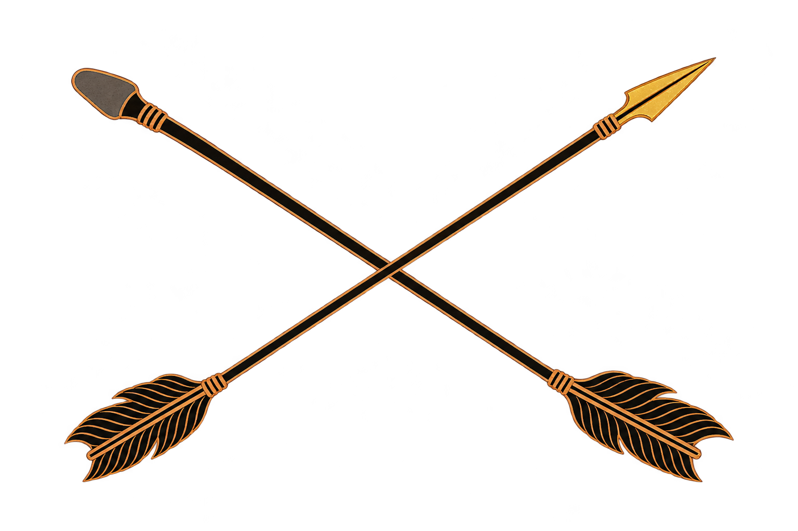
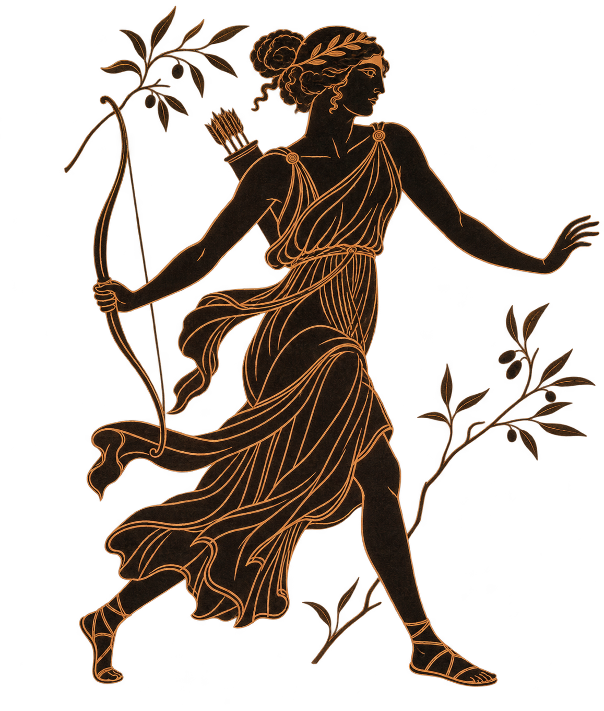
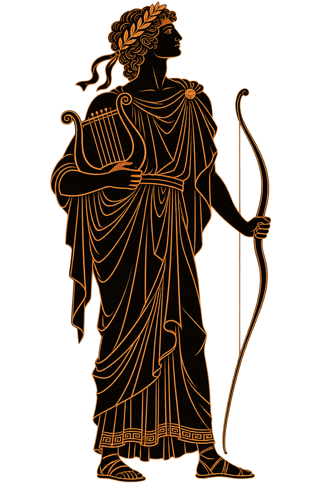
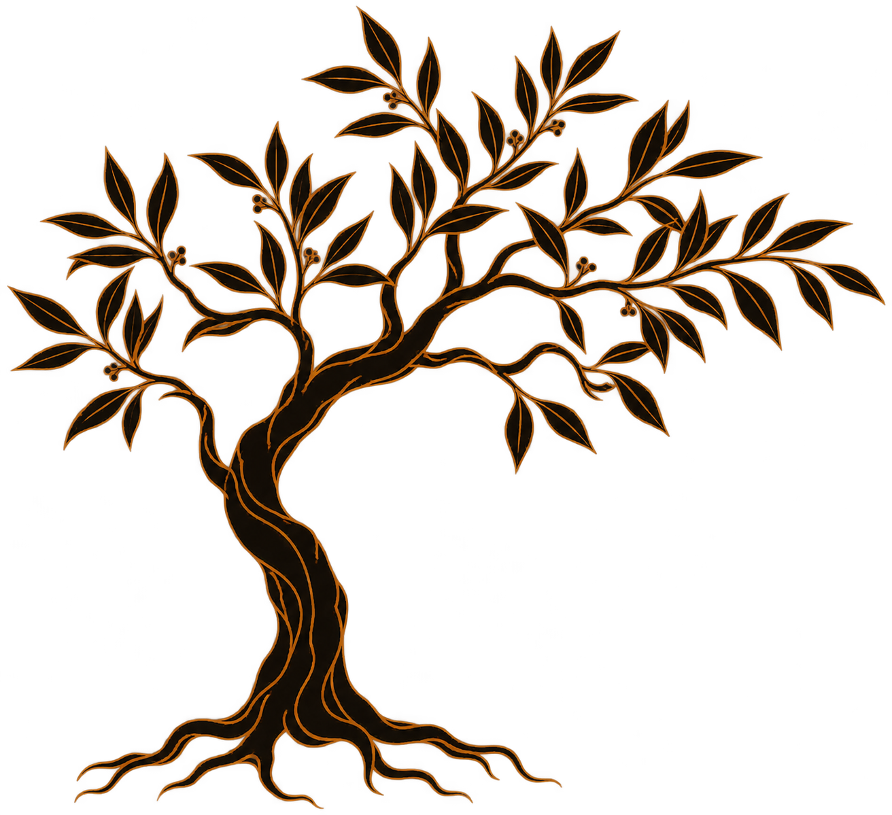

01 / Begyndelsen
Amors to pile
Guden Apollon håner Amor, kærlighedens gud. Amor svarer med to pile.

02 / Mødet
To modsatte ønsker
Nymfen Dafne lever som jæger i skoven og vil ikke giftes. Apollon forelsker sig i hende.

03 / Flugten
Hun løber. Han følger.
Apollon kalder efter hende. Dafne standser ikke, og jagten bliver mere og mere desperat.

04 / Forvandlingen
Ved floden
Udmattet beder Dafne sin far, flodguden Peneus, om hjælp. Hun forvandles til et laurbærtræ.

05 / Efterspillet
Apollons træ
Apollon gør laurbærtræet til sit symbol. Men Dafnes flugt er stadig mytens sidste bevægelse.